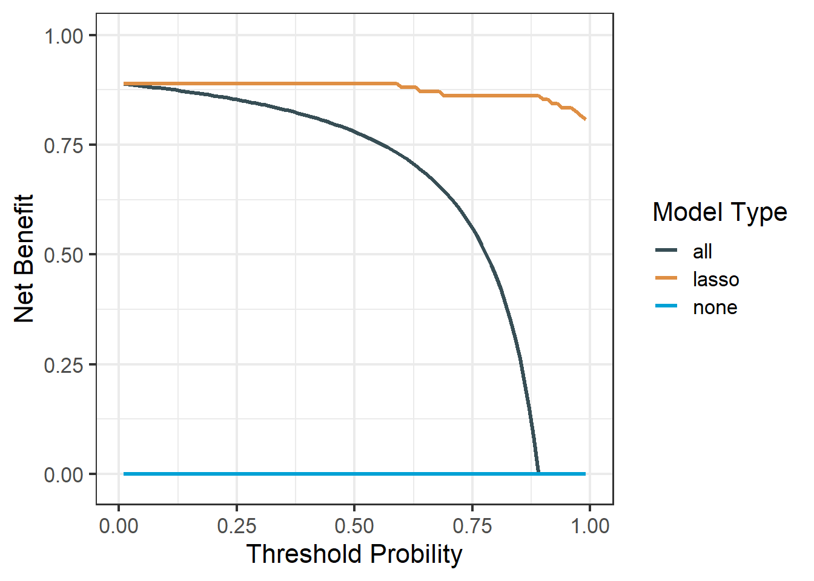
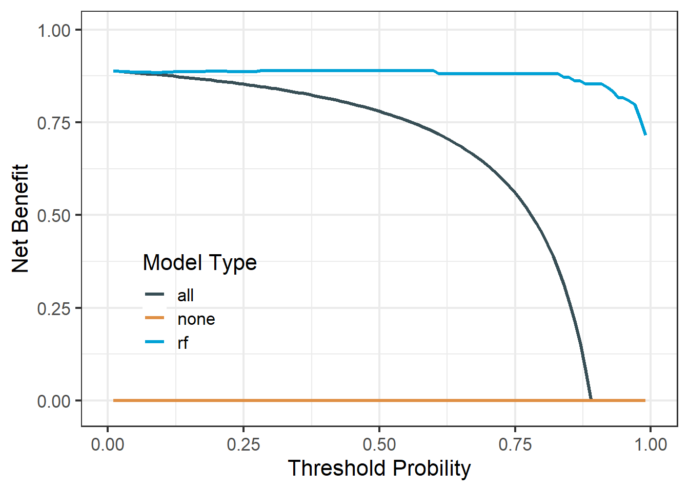

rm(list = ls())
library(survival)
library(dcurves)
data("df_surv")
# 加载函数
# 原函数有问题，这个是我修改过的
# 获取方式：https://mp.weixin.qq.com/s/TZ7MSaPZZ0Pwomyp_7wqFw
source("E:/R/r-clinical-model/000files/stdca.R") # 原函数有问题
# 构建一个多元cox回归
df_surv$cancer <- as.numeric(df_surv$cancer) # stdca函数需要结果变量是0,1
df_surv <- as.data.frame(df_surv) # stdca函数只接受data.frame42 适用于一切模型的决策曲线分析
前面介绍了超多DCA的实现方法，基本上常见的方法都包括了，代码和数据获取方法也给了大家。
今天介绍的是如何实现其他模型的DCA，比如lasso回归、随机森林、决策树、SVM、xgboost等。
这是基于dca.r/stdca.r实现的一种通用方法，使用这个网站给出的代码文件绘制DCA，需要代码的直接去网站下载即可。
注意
这个网站已经不再提供该代码的下载，我很早之前就下载过了，所以我把dca.r/stdca.r这两段代码放在粉丝QQ群文件，需要的加群下载即可（免费的，别问我怎么加群）。
但是原网站下载的stdca.r脚本在某些数据中会遇到以下报错：Error in findrow(fit,times,extend):no points selected for one or more curves, consider using the extend argument，所以我对这段脚本进行了修改，可以解决这个报错。但是需要付费获取，获取链接：适用于一切模型的DCA，没有任何答疑服务，介意勿扰。
- 多个模型多个时间点DCA数据提取并用
ggplot2画图 - lasso回归的DCA
- 随机森林的DCA
42.1 多个时间点多个cox模型的数据提取
其实ggDCA包完全可以做到，只要1行代码就搞定了，而且功能还很丰富。
我给大家演示一遍基于stdca.r的方法，给大家开阔思路，代码可能不够简洁，但是思路没问题，无非就是各种数据整理与转换。
而且很定会有人对默认结果不满意，想要各种修改，下面介绍的这个方法非常适合自己进行各种自定义！
建立多个模型，计算每个模型在不同时间点的概率：
# 建立多个模型
cox_fit1 <- coxph(Surv(ttcancer, cancer) ~ famhistory+marker, data = df_surv)
cox_fit2 <- coxph(Surv(ttcancer, cancer) ~ age + famhistory + marker, data = df_surv)
cox_fit3 <- coxph(Surv(ttcancer, cancer) ~ age + famhistory, data = df_surv)
# 计算每个模型在不同时间点的概率
df_surv$prob11 <- c(1-(summary(survfit(cox_fit1, newdata=df_surv), times=1)$surv))
df_surv$prob21 <- c(1-(summary(survfit(cox_fit2, newdata=df_surv), times=1)$surv))
df_surv$prob31 <- c(1-(summary(survfit(cox_fit3, newdata=df_surv), times=1)$surv))
df_surv$prob12 <- c(1-(summary(survfit(cox_fit1, newdata=df_surv), times=2)$surv))
df_surv$prob22 <- c(1-(summary(survfit(cox_fit2, newdata=df_surv), times=2)$surv))
df_surv$prob32 <- c(1-(summary(survfit(cox_fit3, newdata=df_surv), times=2)$surv))
df_surv$prob13 <- c(1-(summary(survfit(cox_fit1, newdata=df_surv), times=3)$surv))
df_surv$prob23 <- c(1-(summary(survfit(cox_fit2, newdata=df_surv), times=3)$surv))
df_surv$prob33 <- c(1-(summary(survfit(cox_fit3, newdata=df_surv), times=3)$surv))计算threshold和net benefit：
cox_dca1 <- stdca(data = df_surv,
outcome = "cancer",
ttoutcome = "ttcancer",
timepoint = 1,
predictors = c("prob11","prob21","prob31"),
smooth=TRUE,
graph = FALSE
)
## [1] "prob31: No observations with risk greater than 99%, and therefore net benefit not calculable in this range."
cox_dca2 <- stdca(data = df_surv,
outcome = "cancer",
ttoutcome = "ttcancer",
timepoint = 2,
predictors = c("prob12","prob22","prob32"),
smooth=TRUE,
graph = FALSE
)
cox_dca3 <- stdca(data = df_surv,
outcome = "cancer",
ttoutcome = "ttcancer",
timepoint = 3,
predictors = c("prob13","prob23","prob33"),
smooth=TRUE,
graph = FALSE
)
library(tidyr)
library(dplyr)
##
## Attaching package: 'dplyr'
## The following objects are masked from 'package:stats':
##
## filter, lag
## The following objects are masked from 'package:base':
##
## intersect, setdiff, setequal, union42.1.1 第一种数据整理方法
cox_dca_df1 <- cox_dca1$net.benefit
cox_dca_df2 <- cox_dca2$net.benefit
cox_dca_df3 <- cox_dca3$net.benefit
names(cox_dca_df1)[2] <- "all1"
names(cox_dca_df2)[2] <- "all2"
names(cox_dca_df3)[2] <- "all3"
tmp <- cox_dca_df1 %>%
left_join(cox_dca_df2) %>%
left_join(cox_dca_df3) %>%
pivot_longer(cols = contains(c("all","sm","none")),
names_to = "models",
values_to = "net_benefit"
)
## Joining with `by = join_by(threshold, none)`
## Joining with `by = join_by(threshold, none)`画图：
library(ggplot2)
library(ggsci)
ggplot(tmp, aes(x=threshold,y=net_benefit))+
geom_line(aes(color=models),linewidth=1.2)+
scale_x_continuous(labels = scales::label_percent(accuracy = 1),
name="Threshold Probility")+
scale_y_continuous(limits = c(-0.05,0.3),name="Net Benefit")+
theme_bw(base_size = 14)
## Warning: Removed 235 rows containing missing values (`geom_line()`).
42.1.2 第二种数据整理方法
cox_dca_df1 <- cox_dca1$net.benefit
cox_dca_df2 <- cox_dca2$net.benefit
cox_dca_df3 <- cox_dca3$net.benefit
cox_dca_long_df1 <- cox_dca_df1 %>%
rename(mod1 = prob11_sm,
mod2 = prob21_sm,
mod3 = prob31_sm
) %>%
select(-4:-6) %>%
mutate(time = "1") %>%
pivot_longer(cols = c(all,none,contains("mod")),names_to = "models",
values_to = "net_benefit"
)
cox_dca_long_df2 <- cox_dca_df2 %>%
rename(mod1 = prob12_sm,
mod2 = prob22_sm,
mod3 = prob32_sm
) %>%
select(-4:-6) %>%
mutate(time = "2") %>%
pivot_longer(cols = c(all,none,contains("mod")),names_to = "models",
values_to = "net_benefit"
)
cox_dca_long_df3 <- cox_dca_df3 %>%
rename(mod1 = prob13_sm,
mod2 = prob23_sm,
mod3 = prob33_sm
) %>%
select(-4:-6) %>%
mutate(time = "3") %>%
pivot_longer(cols = c(all,none,contains("mod")),names_to = "models",
values_to = "net_benefit"
)
tes <- bind_rows(cox_dca_long_df1,cox_dca_long_df2,cox_dca_long_df3)画图：
ggplot(tes,aes(x=threshold,y=net_benefit))+
geom_line(aes(color=models,linetype=time),linewidth=1.2)+
scale_x_continuous(labels = scales::label_percent(accuracy = 1),
name="Threshold Probility")+
scale_y_continuous(limits = c(-0.05,0.3),name="Net Benefit")+
theme_bw(base_size = 14)
## Warning: Removed 235 rows containing missing values (`geom_line()`).
这种方法可以分面。
ggplot(tes,aes(x=threshold,y=net_benefit))+
geom_line(aes(color=models),linewidth=1.2)+
scale_y_continuous(limits = c(-0.05,0.3),name="Net Benefit")+
scale_x_continuous(labels = scales::label_percent(accuracy = 1),
name="Threshold Probility")+
scale_y_continuous(limits = c(-0.05,0.3),name="Net Benefit")+
theme_bw(base_size = 14)+
facet_wrap(~time)
## Scale for y is already present.
## Adding another scale for y, which will replace the existing scale.
## Warning: Removed 73 rows containing missing values (`geom_line()`).
接下来演示其他模型的DCA实现方法，这里就以二分类变量为例，生存资料的DCA也是一样的，就是需要一个概率而已！
42.2 lasso回归
rm(list = ls())
suppressMessages(library(glmnet))
suppressPackageStartupMessages(library(tidyverse))准备数据，这是从TCGA下载的一部分数据，其中sample_type是样本类型，1代表tumor，0代表normal，我们首先把因变量变为0,1。然后划分训练集和测试集。
df <- readRDS(file = "./datasets/df_example.rds")
df <- df %>%
select(-c(2:3)) %>%
mutate(sample_type = ifelse(sample_type=="Tumor",1,0))
ind <- sample(1:nrow(df),nrow(df)*0.6)
train_df <- df[ind,]
test_df <- df[-ind,]构建lasso回归需要的参数值。
x <- as.matrix(train_df[,-1])
y <- train_df$sample_type在训练集建立lasso回归模型：
cvfit = cv.glmnet(x, y, family = "binomial")
plot(cvfit)在测试集上查看模型表现：
prob_lasso <- predict(cvfit,
newx = as.matrix(test_df[,-1]),
s="lambda.1se",
type="response") #返回概率然后进行DCA，也是基于测试集的：
source("./datasets/dca.r")
test_df$lasso <- prob_lasso
df_lasso <- dca(data = test_df, # 指定数据集,必须是data.frame类型
outcome="sample_type", # 指定结果变量
predictors="lasso", # 指定预测变量
probability = T
)这就是lasso的DCA，由于数据和模型原因，这个DCA看起来很诡异，大家千万要理解实现方法！
library(ggplot2)
library(ggsci)
library(tidyr)
df_lasso$net.benefit %>%
pivot_longer(cols = -threshold,
names_to = "type",
values_to = "net_benefit") %>%
ggplot(aes(threshold, net_benefit, color = type))+
geom_line(linewidth = 1.2)+
scale_color_jama(name = "Model Type")+
scale_y_continuous(limits = c(-0.02,1),name = "Net Benefit")+
scale_x_continuous(limits = c(0,1),name = "Threshold Probility")+
theme_bw(base_size = 16)+
theme(legend.position = c(0.2,0.3),
legend.background = element_blank()
)
## Warning: Removed 10 rows containing missing values (`geom_line()`).
42.3 随机森林
library(ranger)
rf <- ranger(sample_type ~ ., data = train_df)
prob_rf <- predict(rf,test_df[,-1],type = "response")$predictions
test_df$rf <- prob_rf
df_rf <- dca(data = test_df, # 指定数据集,必须是data.frame类型
outcome="sample_type", # 指定结果变量
predictors="rf", # 指定预测变量
probability = T,
graph = F
)df_rf$net.benefit %>%
pivot_longer(cols = -threshold,
names_to = "type",
values_to = "net_benefit") %>%
ggplot(aes(threshold, net_benefit, color = type))+
geom_line(linewidth = 1.2)+
scale_color_jama(name = "Model Type")+
scale_y_continuous(limits = c(-0.02,1),name = "Net Benefit")+
scale_x_continuous(limits = c(0,1),name = "Threshold Probility")+
theme_bw(base_size = 16)+
theme(legend.position = c(0.2,0.3),
legend.background = element_blank()
)
## Warning: Removed 10 rows containing missing values (`geom_line()`).
42.4 logistic
logis <- glm(sample_type ~ ., data = train_df,family = binomial())
## Warning: glm.fit: algorithm did not converge
## Warning: glm.fit: fitted probabilities numerically 0 or 1 occurred
prob_logis <- predict(logis, test_df[,-1],type = "response")test_df$logis <- prob_logis
df_logis <- dca(data = test_df, # 指定数据集,必须是data.frame类型
outcome="sample_type", # 指定结果变量
predictors="logis", # 指定预测变量
probability = T,
graph = T
)
还有其他比如支持向量机等，就不一一介绍了，实现原理都是一样的，就是需要一个概率而已。